Exact lineage anchor
maximum contour-bound invention · seed 80413
source parameters {"bodyLength":1.05,"bodyDepth":0.36,"dorsalArch":0.03,"posteriorMass":0.85,"supportSpacing":0.52,"supportLength":0.32}
exact prompt Every supplied reference image shows the same authored organism from a different camera, with references 1 and 3 repeating the target view. Preserve the target camera, outer silhouette, body proportions, support count and placement, and major mass distribution. Complete one healthy, aesthetically pleasing living quadruped with rich species-specific anatomy, an expressive friendly face, articulated support transitions, strongly resolved skin or fur and materials, and abundant coherent regional detail contained within the authored outline.
effective route · done · exit 0 · mflux_flux2_edit_promptfile_3ref
/Users/noahlyons/dev/mlx-openai-server/.venv/bin/mflux-generate-flux2-edit --image-paths /private/tmp/kaminos-molten-metaball-silhouette-0804/artifacts/lirm-metaball-target-first-multiview-v0/views/target-three-quarter/target-three-quarter/depth-implicit.png /private/tmp/kaminos-molten-metaball-silhouette-0804/artifacts/lirm-metaball-target-first-multiview-v0/views/side/side/depth-implicit.png /private/tmp/kaminos-molten-metaball-silhouette-0804/artifacts/lirm-metaball-target-first-multiview-v0/views/target-three-quarter/target-three-quarter/depth-implicit.png --prompt-file /private/tmp/kaminos-molten-metaball-silhouette-0804/artifacts/lirm-metaball-contour-embellishment-v0/prompts/maximum-contour-bound-invention.txt --output /private/tmp/kaminos-molten-metaball-silhouette-0804/artifacts/lirm-metaball-contour-embellishment-v0/generated/maximum-contour-bound-invention/seed-80413/output.png --metadata --model flux2-klein-9b --quantize 4 --height 512 --width 512 --steps 8 --guidance 1.0 --seed 80413 --mlx-cache-limit-gb 48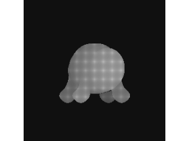
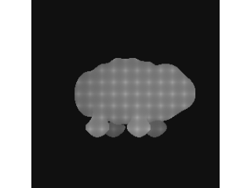

axial-short
bodyLength: 1.05 → 0.78 · seed 80413
bauplan parameters {"bodyLength":0.78,"bodyDepth":0.36,"dorsalArch":0.03,"posteriorMass":0.85,"supportSpacing":0.52,"supportLength":0.32}
exact prompt Every supplied reference image shows the same authored organism from a different camera, with references 1 and 3 repeating the target view. Preserve the target camera, outer silhouette, body proportions, support count and placement, and major mass distribution. Complete one healthy, aesthetically pleasing living quadruped with rich species-specific anatomy, an expressive friendly face, articulated support transitions, strongly resolved skin or fur and materials, and abundant coherent regional detail contained within the authored outline.
effective route pending
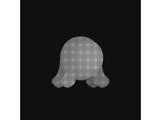
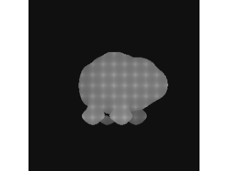
baseline
shared baseline · seed 80413
bauplan parameters {"bodyLength":1.05,"bodyDepth":0.36,"dorsalArch":0.03,"posteriorMass":0.85,"supportSpacing":0.52,"supportLength":0.32}
exact prompt Every supplied reference image shows the same authored organism from a different camera, with references 1 and 3 repeating the target view. Preserve the target camera, outer silhouette, body proportions, support count and placement, and major mass distribution. Complete one healthy, aesthetically pleasing living quadruped with rich species-specific anatomy, an expressive friendly face, articulated support transitions, strongly resolved skin or fur and materials, and abundant coherent regional detail contained within the authored outline.
effective route pending
axial-long
bodyLength: 1.05 → 1.35 · seed 80413
bauplan parameters {"bodyLength":1.35,"bodyDepth":0.36,"dorsalArch":0.03,"posteriorMass":0.85,"supportSpacing":0.52,"supportLength":0.32}
exact prompt Every supplied reference image shows the same authored organism from a different camera, with references 1 and 3 repeating the target view. Preserve the target camera, outer silhouette, body proportions, support count and placement, and major mass distribution. Complete one healthy, aesthetically pleasing living quadruped with rich species-specific anatomy, an expressive friendly face, articulated support transitions, strongly resolved skin or fur and materials, and abundant coherent regional detail contained within the authored outline.
effective route pending
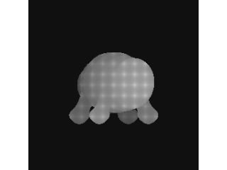
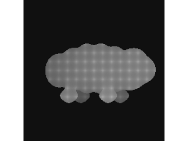
body-shallow
bodyDepth: 0.36 → 0.26 · seed 80413
bauplan parameters {"bodyLength":1.05,"bodyDepth":0.26,"dorsalArch":0.03,"posteriorMass":0.85,"supportSpacing":0.52,"supportLength":0.32}
exact prompt Every supplied reference image shows the same authored organism from a different camera, with references 1 and 3 repeating the target view. Preserve the target camera, outer silhouette, body proportions, support count and placement, and major mass distribution. Complete one healthy, aesthetically pleasing living quadruped with rich species-specific anatomy, an expressive friendly face, articulated support transitions, strongly resolved skin or fur and materials, and abundant coherent regional detail contained within the authored outline.
effective route pending
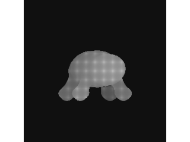
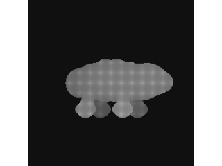
body-deep
bodyDepth: 0.36 → 0.56 · seed 80413
bauplan parameters {"bodyLength":1.05,"bodyDepth":0.56,"dorsalArch":0.03,"posteriorMass":0.85,"supportSpacing":0.52,"supportLength":0.32}
exact prompt Every supplied reference image shows the same authored organism from a different camera, with references 1 and 3 repeating the target view. Preserve the target camera, outer silhouette, body proportions, support count and placement, and major mass distribution. Complete one healthy, aesthetically pleasing living quadruped with rich species-specific anatomy, an expressive friendly face, articulated support transitions, strongly resolved skin or fur and materials, and abundant coherent regional detail contained within the authored outline.
effective route pending
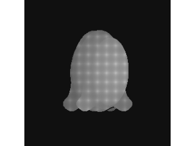
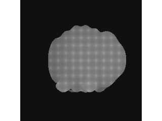
supports-short
supportLength: 0.32 → 0.23 · seed 80413
bauplan parameters {"bodyLength":1.05,"bodyDepth":0.36,"dorsalArch":0.03,"posteriorMass":0.85,"supportSpacing":0.52,"supportLength":0.23}
exact prompt Every supplied reference image shows the same authored organism from a different camera, with references 1 and 3 repeating the target view. Preserve the target camera, outer silhouette, body proportions, support count and placement, and major mass distribution. Complete one healthy, aesthetically pleasing living quadruped with rich species-specific anatomy, an expressive friendly face, articulated support transitions, strongly resolved skin or fur and materials, and abundant coherent regional detail contained within the authored outline.
effective route pending
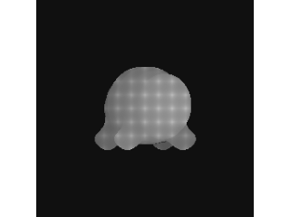
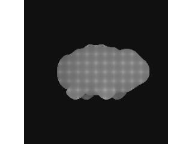
supports-long
supportLength: 0.32 → 0.57 · seed 80413
bauplan parameters {"bodyLength":1.05,"bodyDepth":0.36,"dorsalArch":0.03,"posteriorMass":0.85,"supportSpacing":0.52,"supportLength":0.57}
exact prompt Every supplied reference image shows the same authored organism from a different camera, with references 1 and 3 repeating the target view. Preserve the target camera, outer silhouette, body proportions, support count and placement, and major mass distribution. Complete one healthy, aesthetically pleasing living quadruped with rich species-specific anatomy, an expressive friendly face, articulated support transitions, strongly resolved skin or fur and materials, and abundant coherent regional detail contained within the authored outline.
effective route pending
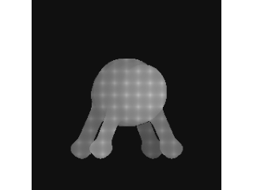
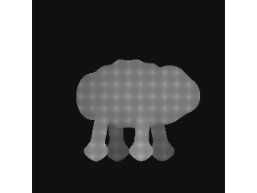